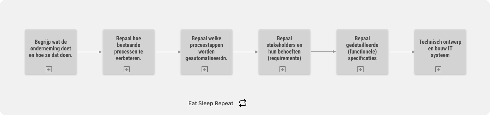

<div id="samen-werken" class="pt-32 max-w-prose mx-auto min-h-screen">
    <div  class=" " >
        <div id='' class="flex px-4 ">
            <h1 class='-ml-4 text-2xl'>Hoe mag ik je helpen</h1>
            <svg height="6" width="64" class='mt-4 ml-1 stroke-sky-400'>
                <line x1="0" y1="0" x2="64" y2="0" style="stroke-width:4" />
            </svg>
        </div>
        
        <div>
            
        </div>
    </div>
</div>